欧游札记之英国大学路(第六日 大笨钟&白金汉宫)
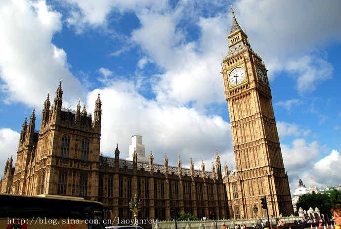
第六日 大笨钟&白金汉宫
清晨从希尔顿酒店早起散步，该酒店位于伦敦市郊离市区大约45分钟车程，典型的城郊结合部，尽管时间尚早，但通往伦敦的双向车道俨然已车水马龙，充分显示了英国人住郊区进城工作的居住习惯，这一点与美国、加拿大、澳洲等地广人稀的国家的情况基本相同。连接市郊与市区的公路尽管不算宽，但来往车辆的车速都不低，极少有塞车情况，路边的绿树成荫，牧草茵茵，为上班的人们增添了几分景致。
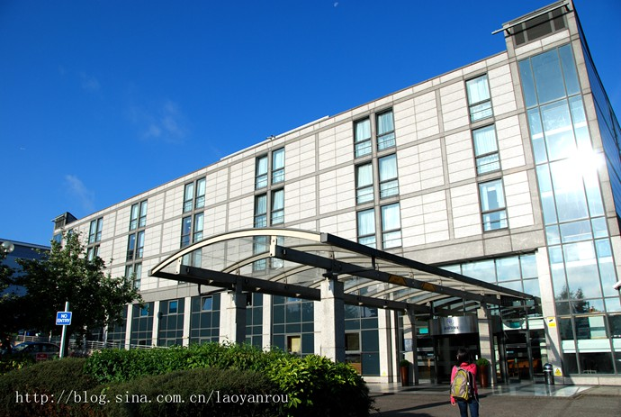
上午参观了宏伟的温德米尔大教堂、途经高耸入云的伦敦标志性建筑大笨钟、在特拉法交广场的四只雄狮围绕的石柱和两个圆形喷水池边上留影数张，然后沿着著名的白厅街，终得一窥英国首相官邸－唐宁街。接着直奔象征着最高皇权的白金汉宫，初见此宫殿第一感觉除了辉煌还是辉煌，尽管未能入内细看，但只需从殿外的皇家大道和久经沧桑仍保养良好的建筑及雕塑便可知白金汉宫凝聚着无数英国人对皇权的尊敬和爱戴。我们欣赏完着鲜红制服步伐整齐划一的皇家仪仗队的正步操练游行后，逛到宫殿外的草地旁，映入眼帘的却是一派田园景象，还没等从方才卫队的皇家威仪中缓过神来就马上被宫殿外的小溪潺潺，水鸭嘎嘎的反差所震到，那是怎样才能达到的一种人工威严与自然万物的琴瑟相和境界呢？
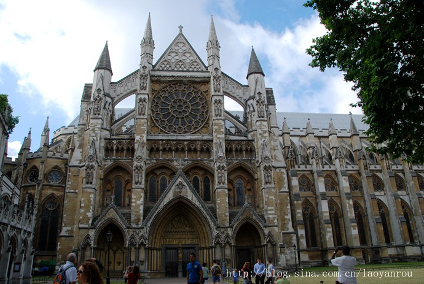
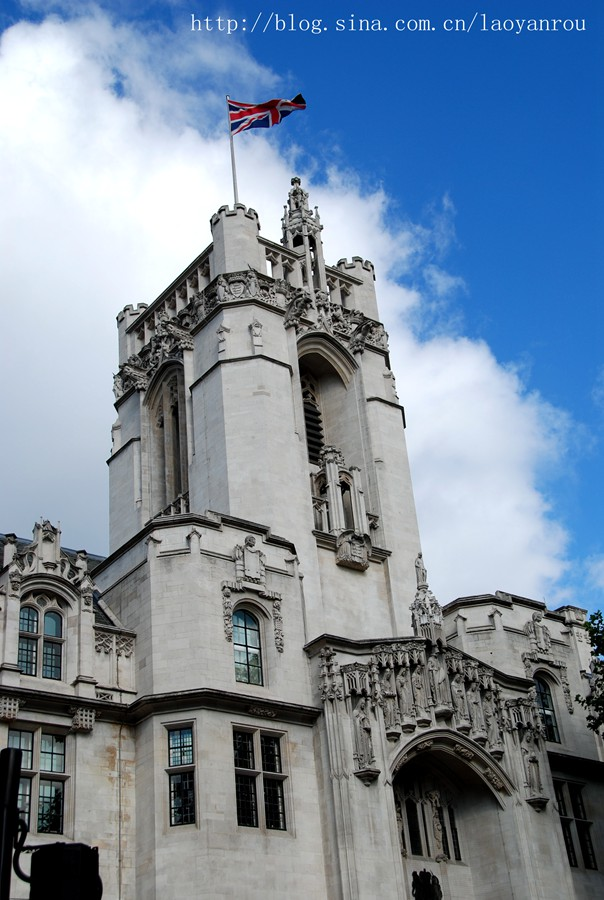
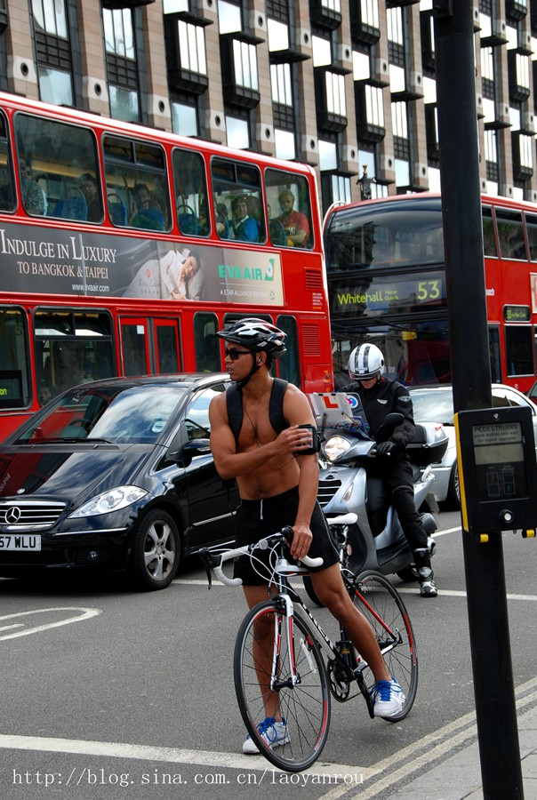

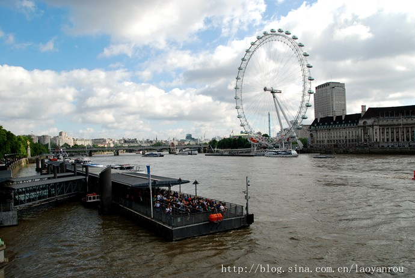
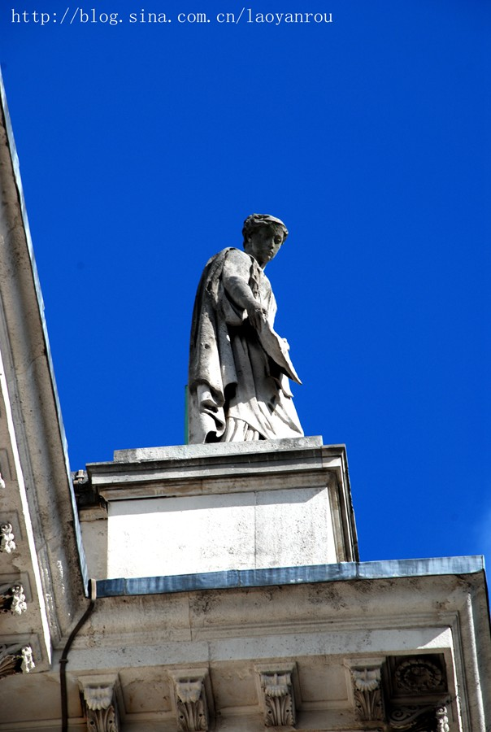
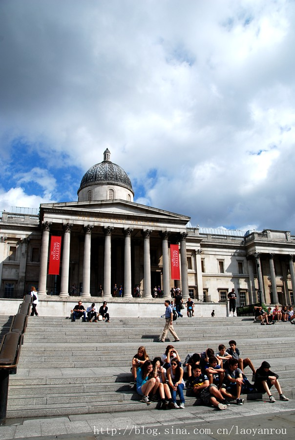
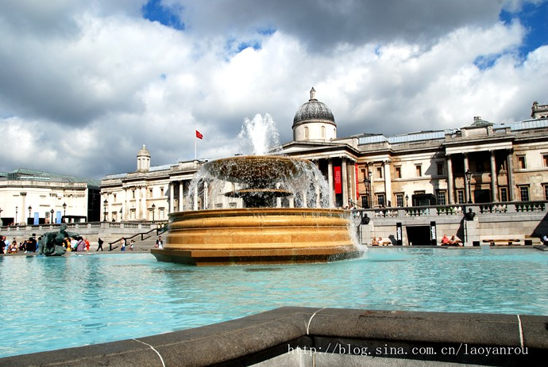
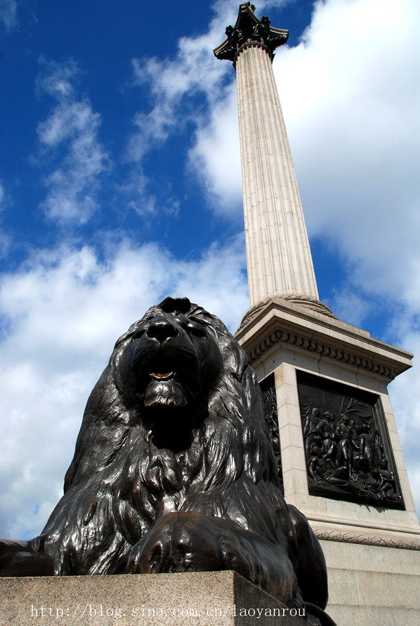
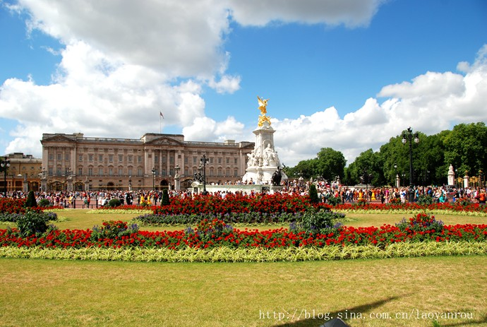
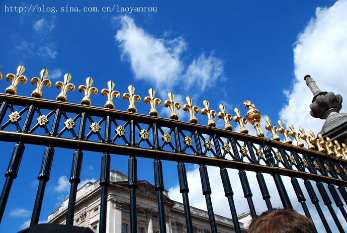
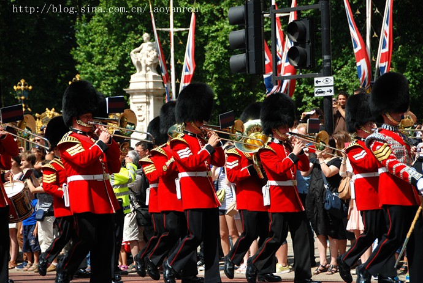
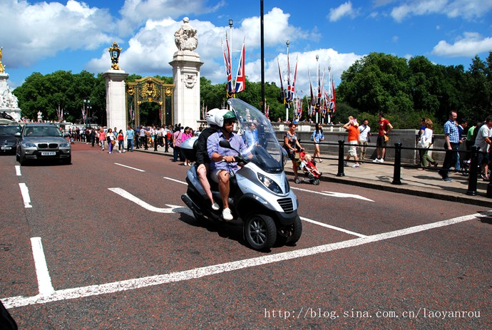
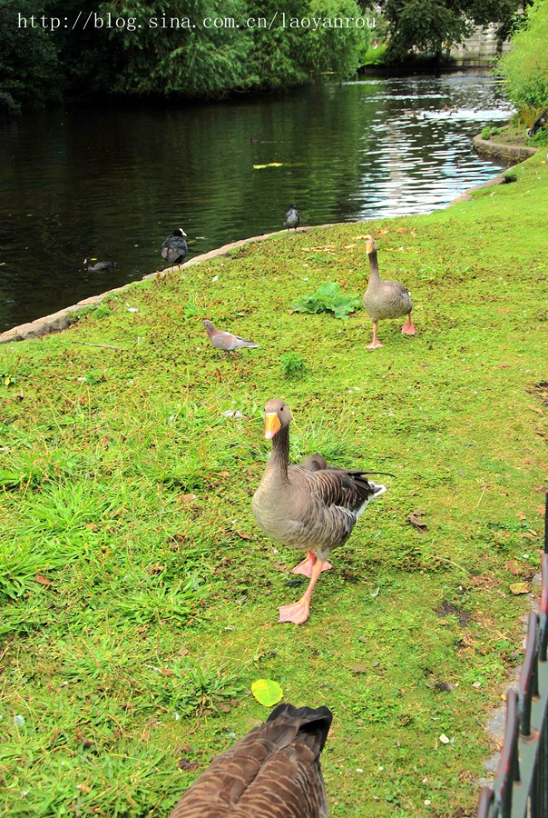
下午的另一大活动为selfridge购物，或许对购物不太感冒，又或者国人这些年确实对奢侈豪华品牌已经见怪不怪了，因此整体感觉这个百货所提供的商品除了英国本土品牌有些看头外，其余的均可以在国内或香港觅得踪迹，而且价格与香港相比并不具吸引力，所以就只是简单闲逛了一下就直杀网上传言的Argos商店而去，这个网购与实体仓库结合的商店里主要出售的是服装，玩具，家居用品，体育，健康，电子产品，珠宝手表等等，在那里我们还真是淘到了一些物廉价美的好东东，着实体验了一把前店后仓的全新购物模式。